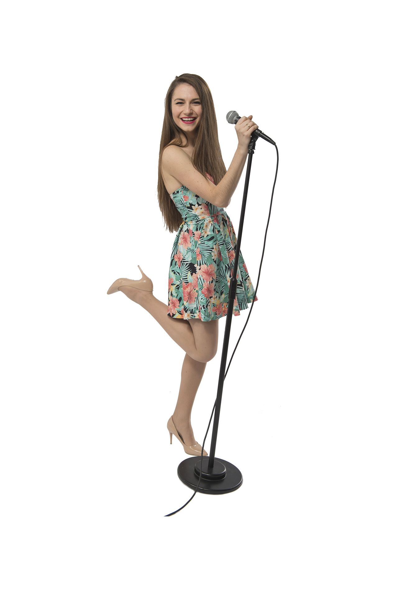
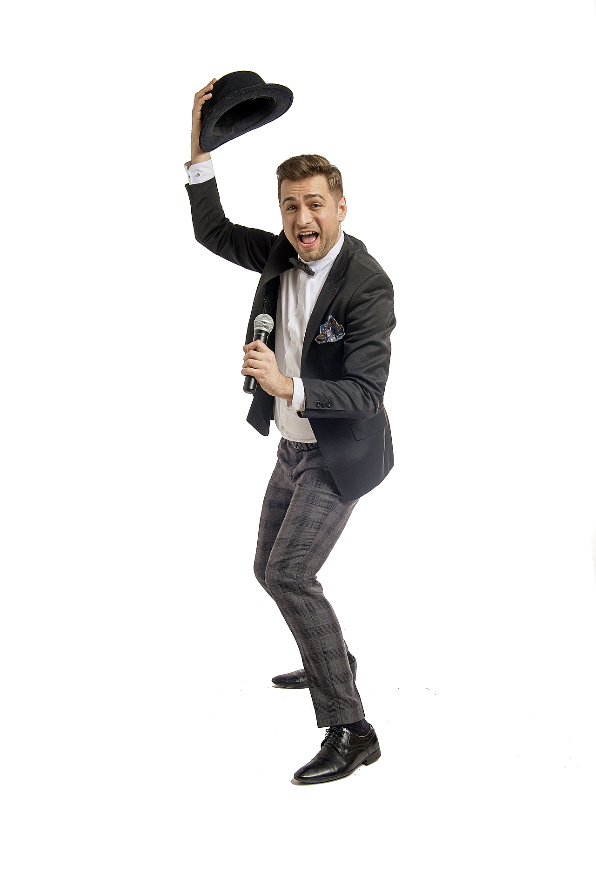
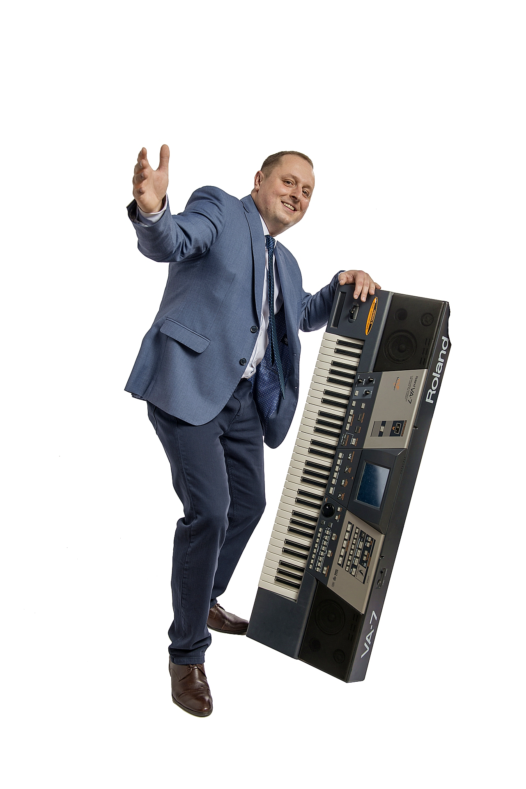
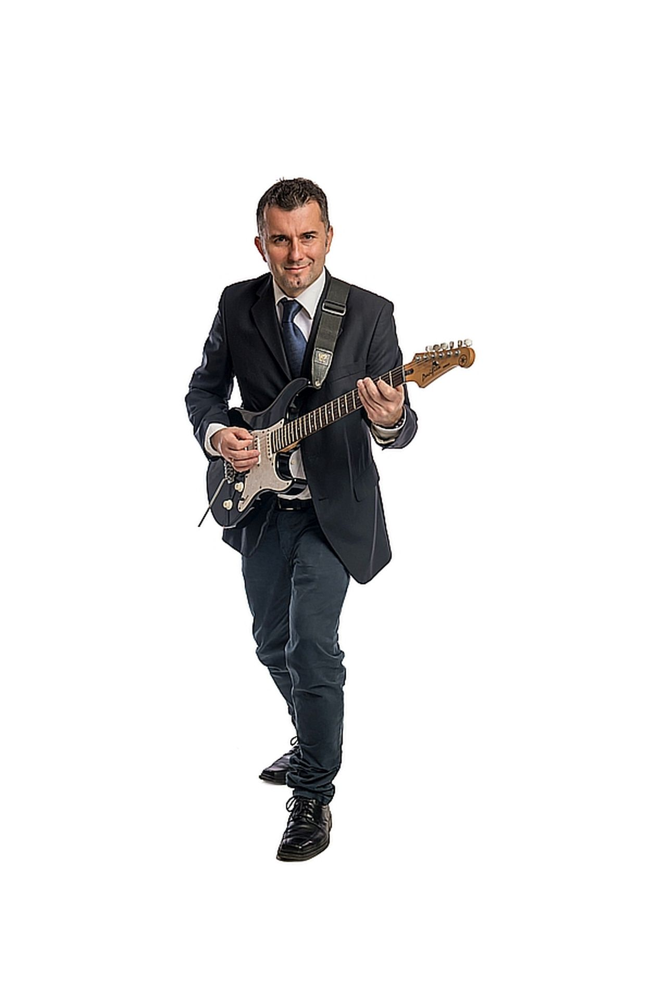
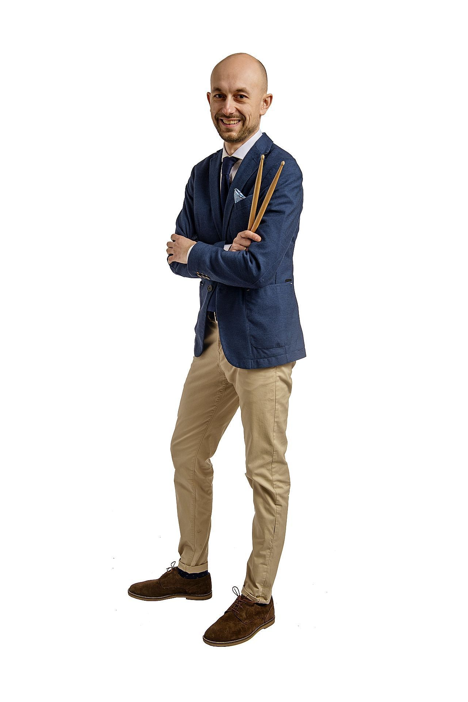

Alicja - absolwentka szkoły muzycznej pierwszego stopnia w klasie fortepianu i saksofonu. Od 5 lat realizuje się jako wokalistka w zespołach muzycznych. W zespole MultiBand oprócz śpiewania gra na saksofonie i pełni rolę konferansjera;

Radek - wokalista polskich scen muzycznych o niezwykle charyzmatycznym usposobieniu. Wieloletnie doświadczenie sceniczne zdobył współpracując z różnymi zespołami muzycznymi oraz agencjami artystycznymi. Występował z takimi artystami jak: Kayah, Andrzej Lampert, Zbigniew Wodecki, Ryszard Rynkowski, Zakopower i inni. Wielokrotny uczestnik warsztatów wokalnych z Grażyną Łobaszewską oraz Elżbietą Zapendowską. Uwielbia soul, jazz, blues i swing. Swą ciekawą osobowością wnosi do zespołu MultiBand wiele radości i uśmiechu;

Wojtek - założyciel zespołu MultiBand. Absolwent szkół muzycznych I i II stopnia w Krakowie oraz Wydziału Instrumentalnego Akademii Muzycznej w Krakowie. Jako trębacz, w roku 2002, wraz z zespołem Żandarm zdobył nagrodę imienia Anny Jantar na Krajowym Festiwalu Piosenki Polskiej w Opolu (Debiuty). Współpracował z wieloma muzykami, biorąc udział w licznych koncertach rozgrzewających publiczność, m.in. przed takimi gwiazdami jak: Hey, Kult, Wilki, Łzy, Maryla Rodowicz, Chumbawamba. Koncertował niemalże we wszystkich krajach europejskich, zwłaszcza z dwudziestoosobowym big - bandem jazzowym. W zespole MultiBand pełni rolę klawiszowca i wokalisty;

Marcin - gitarzysta z kilkunastoletnim doświadczeniem, kochający dźwięki i dobrą zabawę! Gra na gitarze jest jego pasją, która pochłania większość wolnego czasu. W 2002 roku, wraz z zespołem Żandarm zdobył nagrodę imienia Anny Jantar na Krajowym Festiwalu Piosenki Polskiej w Opolu (Debiuty). Współpracował z kilkoma zespołami, a jego zainteresowania myzyczne, to przede wszystkim blues, rock i funky. Nagminnie używa żartów z minionej epoki, uwielbia ludzi, ale najbardziej lubi odlatywać na rockowych solówkach;

Paweł - perkusista z wieloletnim doświadczeniem scenicznym. Od piętnastego roku życia muzyka jest jego pasją, którą w miarę możliwości stara się rozwijać jak najprężniej, doskonaląc swój warsztat. Nie zapomina również o swoich licznych zainteresowaniach pozamuzycznych. Na wszystko zawsze znajdzie czas, ponieważ, jak powtarza: życie, to nic innego jak rytm, który można opanowywać na różne sposoby, nie tylko za pomocą magicznych pałeczek;